Experiments
Laboratory Experiments
With the laboratory completed, we will now move on to the experiments related to ANYsec. Our aim in this section is to analyze ANYsec's most important components related to its tunneling capabilities and perform some technical comparisons with MACsec.
MKA over UDP, Handshake and KeepAlive comparisons with MACsec
For our first experiment, we will study how ANYsec performs authentication. Similar to MACsec, ANYsec uses MKA to perform its authentication process and share the session keys that will be used to secure traffic within ANYsec.
The main difference between ANYsec's MKA and MACsec's MKA is that, for ANYsec, the MKA packets are sent using UDP because they need to be transmitted across entire networks rather than only at the link level.
For the majority, if not all, of the ANYsec packets we will be analyzing, Wireshark is still incapable of dissecting them. As such, all the figures we will display with dissected packets were created in Wireshark with the ANYsec Dissectors plugin installed. We recommend installing it for the full experience.
We will then examine the MKA process to identify any differences or similarities. For this, we will retrigger a handshake by rebooting routers PE1 and PE2 using the following command on both machines simultaneously:
Before running the command, place Wireshark probes on the two ports of both routers facing P3 and P4, and then run the command to observe the handshake and the MKA process.
The result should be similar to what we observed in MACsec: a sudden break from the KeepAlive routine, followed by the MKA handshake packets and then the regular packets again.
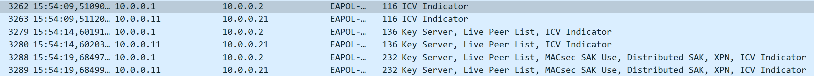
From Figure 1, we can identify some interesting aspects. First, the MKA process is identical to the one we see in MACsec. Second, we can see two handshakes occurring at once, which are the two services that use tunnel encryption.
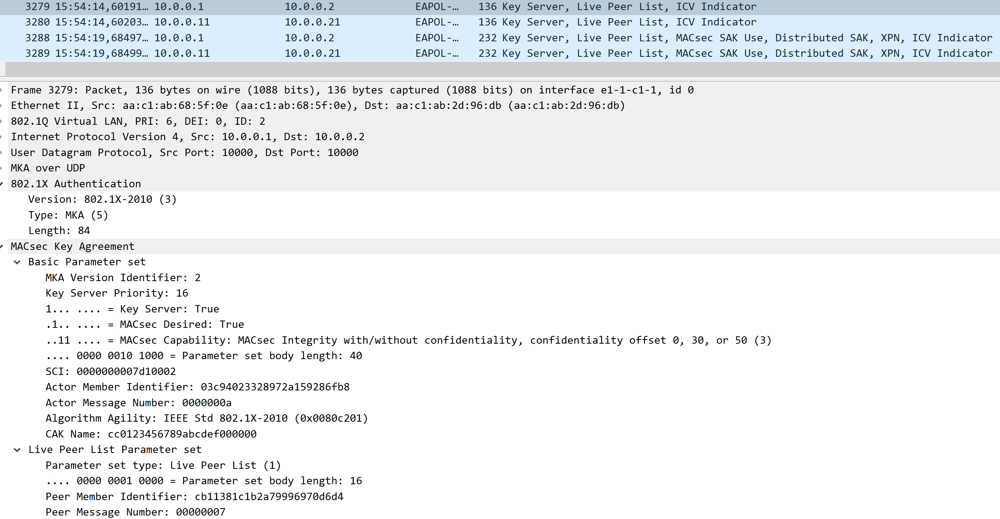
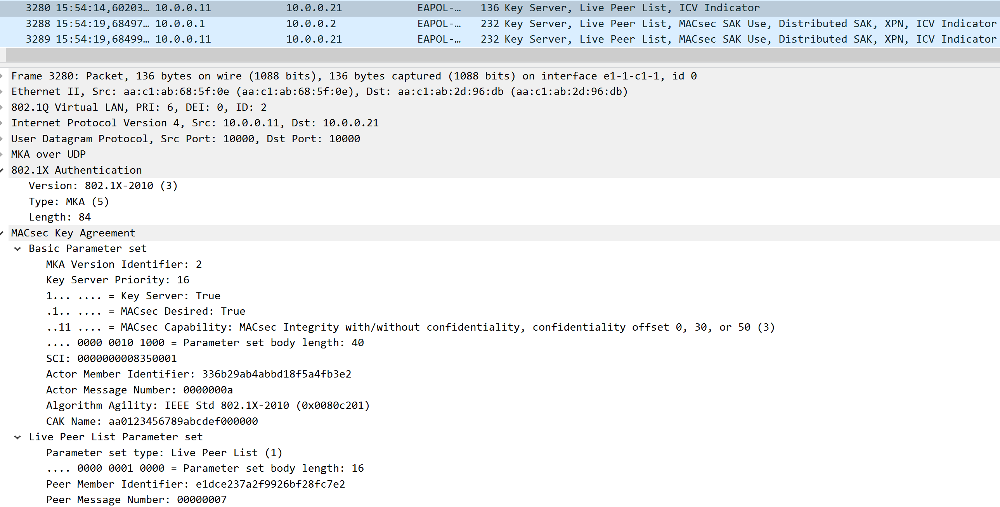
We can see in Figures 2 and 3 that the CAK names for both packets are different and match the names we used in the configuration of the two services using tunnel encryption.
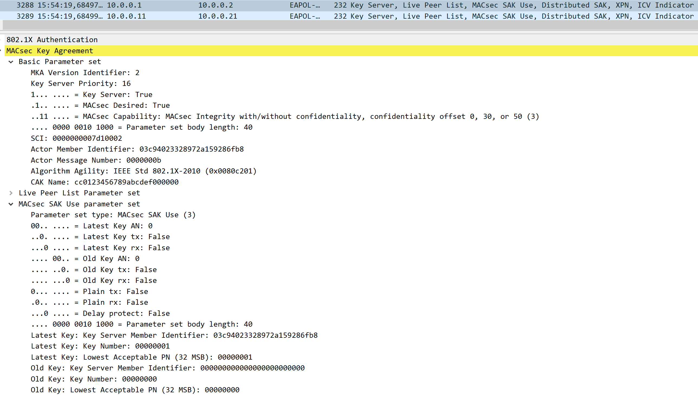
Figure 4 shows the final handshake packets, which distribute the two SAKs that will be used by the ANYsec tunnel, specifically for the two services using tunnel encryption. This way, each service has its own SAK and, therefore, its own encryption, detached from the other services.
Following the full handshake process, we can see that ANYsec uses MKA in the same way as MACsec, with the difference that it is transported over UDP so that it can traverse several routers to reach its destination. In addition, several handshakes can occur at once depending on how many CAs are needed for tunnels or services.
We will now briefly analyze the ANYsec KeepAlive to see what it uses to maintain its connection.
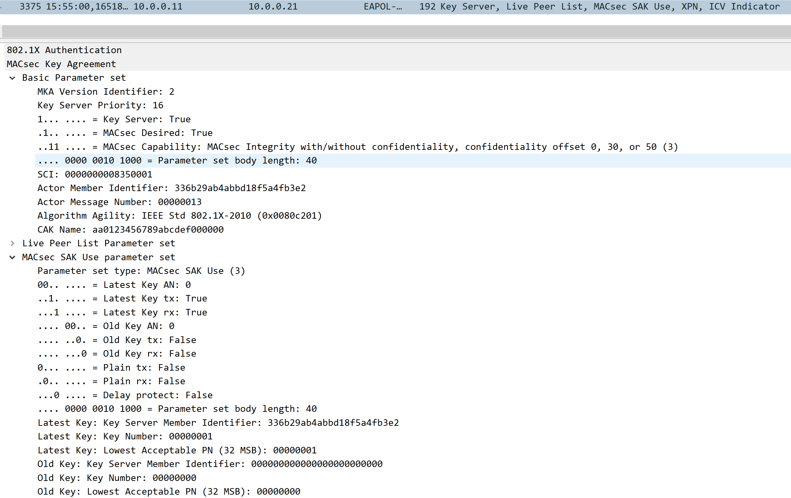
As we can see in Figure 5, the KeepAlive for ANYsec is identical to the one used by MACsec, sharing the same parameters to prove that the connection is still active and ready to communicate.
End-to-End encryption vs Hop-by-Hop encryption
As we saw in the MACsec experiments, MACsec operates with hop-by-hop encryption, meaning that every time a MACsec-encrypted packet passes through a router, it must be decrypted and then encrypted again using a new SAK. This type of operation provides additional security, but it also introduces challenges, mainly regarding performance.
ANYsec differs from MACsec in this regard, operating with end-to-end encryption. This means that a packet is encrypted at the starting point of ANYsec, crosses several networks and routers, and is only decrypted when it reaches the destination router of ANYsec.
This is possible because of ANYsec's ability to operate above Layer 2, namely at Layer 2.5 and Layer 3, making it possible to route packets all the way to their destination without having to decrypt them.
With this experiment, we will observe this behavior in action by sending packets across ANYsec, capturing them on routers P3 and P4, and comparing them with the packets arriving at routers PE1 and PE2 to confirm whether ANYsec truly provides end-to-end encryption.
To begin, we will use Host 1 to send the pings. Therefore, we only need to place Wireshark probes on port 1/1/c2/1 of P3 and P4 and on both ports of PE2.
After placing the probes and ensuring that everything is running correctly, we will perform the same three pings we used to test the laboratory configuration:
Let each ping run for some time to capture several packets at every step of the path.
After all the pings are complete, use a version of Wireshark capable of dissecting ANYsec packets to examine the captures.
In theory, the packets related to the service at 192.168.51.8 should have traveled through P3 to reach PE2 on port 1/1/c1/1. The packets related to the service at 192.168.52.8 should have traveled through P4 to reach PE2 on port 1/1/c2/1. Finally, the packets related to the service at 192.168.63.8 should have traveled through P4, then P3, and finally arrived at PE2 on port 1/1/c1/1.
Let's analyze the captured packets and see whether our end-to-end theory is correct.
We will start by looking at the packets generated by pinging 192.168.51.8. These should be related to service 1001, meaning that they should have the label 2101.
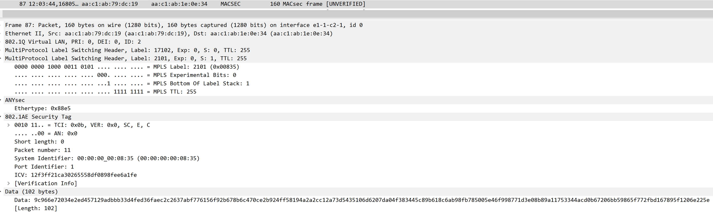
As we can see in Figure 6, the packet captured on P3 does have the expected 2101 MPLS label, meaning that it is one of the packets generated by the first ping. Let's now compare it with the packet received by PE2 and see whether the information within the MPLS header, 802.1AE Security Tag, and data remains the same.
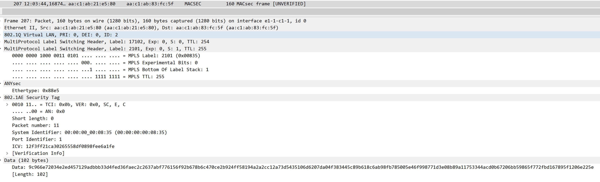
We can observe in Figure 7 that the packet reached PE2 shortly after passing through P3. We can confirm that it is the same packet based on its 2101 label. Furthermore, we can see no changes to any of the information in the headers or data, showing that the packet crossed the network without being modified and arrived at PE2 in the same state as when it left PE1.
Now that we have confirmed our assumption, let's look at the other two pings to determine whether they follow the same pattern.
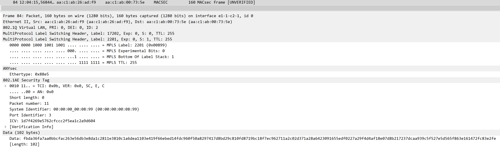
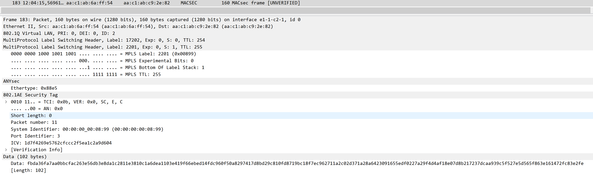
As we can see in Figures 8 and 9, this packet belongs to service 1002 because of its 2201 MPLS label, and all the headers and data related to ANYsec remain the same, further demonstrating the end-to-end encryption provided by ANYsec.
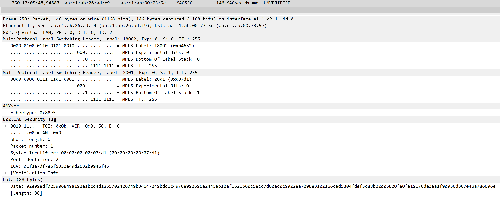
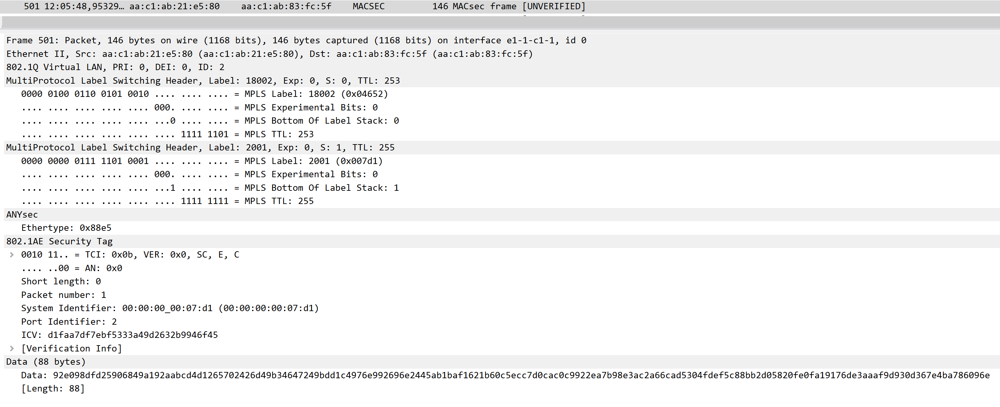
Finally, in Figures 10 and 11, we can see that service 1003, identified by the MPLS label 2001, also follows the same pattern as the other two services, and the packets fully match.
Tunnel Encryption
For this experiment, we will explore one of ANYsec's methods of encrypting traffic: Tunnel Encryption.
Tunnel Encryption was the first method of encryption developed for ANYsec. Its objective was to create a tunnel through which all ANYsec traffic would pass, encrypted using the same CA.
This experiment will focus on explaining the configuration of Tunnel Encryption and how to analyze and obtain information about it using router commands.
First, to encrypt a service through Tunnel Encryption, it is necessary to create its Security Termination Policy and Encryption Group.
The Security Termination Policy is essentially a way to define the identity and endpoint of the tunnel. It includes:
- Local Address
- Routing Protocol
- IGP Instance
Its configuration, for example, for service 1001 is as follows:
/configure anysec security-termination-policies policy "STP_VLL-1001" admin-state enable
/configure anysec security-termination-policies policy "STP_VLL-1001" local-address 10.0.0.11
/configure anysec security-termination-policies policy "STP_VLL-1001" rx-must-be-encrypted false
/configure anysec security-termination-policies policy "STP_VLL-1001" protocol sr-isis
/configure anysec security-termination-policies policy "STP_VLL-1001" igp-instance-id 1
The Encryption Group, on the other hand, is used to define what will be encrypted and who the other endpoint is. It includes:
- Security Termination Policy
- Peer
- Peer tunnel information
- Encryption Label
- CA that will be used
Its configuration for service 1001 is as follows:
/configure anysec tunnel-encryption encryption-group "EG_VLL-1001" admin-state enable
/configure anysec tunnel-encryption encryption-group "EG_VLL-1001" security-termination-policy "STP_VLL-1001"
/configure anysec tunnel-encryption encryption-group "EG_VLL-1001" encryption-label 2101
/configure anysec tunnel-encryption encryption-group "EG_VLL-1001" ca-name "CA_VLL-1001"
/configure anysec tunnel-encryption encryption-group "EG_VLL-1001" peer-tunnel-attributes protocol sr-isis
/configure anysec tunnel-encryption encryption-group "EG_VLL-1001" peer-tunnel-attributes igp-instance-id 1
/configure anysec tunnel-encryption encryption-group "EG_VLL-1001" peer 10.0.0.21 admin-state enable
These two elements can be viewed on the routers using the command:
This command will display information regarding the Encryption Group associated with service 1001, including the Security Termination Policy, as we can see in Figure 12:
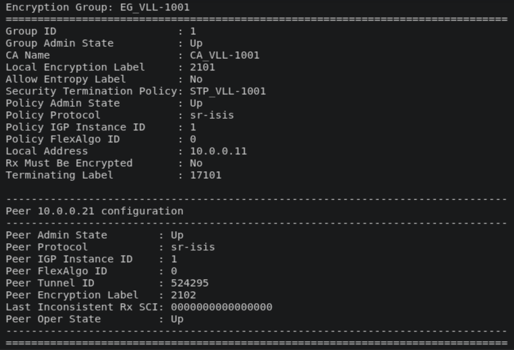
We can see that all the information we configured is present here, including the configuration related to this router's peer.
Another important part of the configuration is the CAs used by ANYsec.
To configure these, we configure the router to create several MACsec CAs and enable the ANYsec flag so that it knows these CAs are being used for ANYsec rather than MACsec.
With several CAs configured and assigned through the Encryption Group, the router will know which CAs to assign to which services, and each service will have its own set of keys.
The CA configuration can be seen below:
/configure macsec connectivity-association "CA_VLL-1001" admin-state enable
/configure macsec connectivity-association "CA_VLL-1001" description "Anysec ISIS 1"
/configure macsec connectivity-association "CA_VLL-1001" clear-tag-mode none
/configure macsec connectivity-association "CA_VLL-1001" cipher-suite gcm-aes-xpn-128
/configure macsec connectivity-association "CA_VLL-1001" anysec true
/configure macsec connectivity-association "CA_VLL-1001" static-cak active-psk 1
/configure macsec connectivity-association "CA_VLL-1001" static-cak mka-hello-interval 5
/configure macsec connectivity-association "CA_VLL-1001" static-cak pre-shared-key 1 encryption-type aes-128-cmac
/configure macsec connectivity-association "CA_VLL-1001" static-cak pre-shared-key 1 cak "0123456789ABCDEF0123456789ABCDEF"
/configure macsec connectivity-association "CA_VLL-1001" static-cak pre-shared-key 1 cak-name "AA0123456789ABCDEF"
/configure macsec connectivity-association "CA_VLL-1001" static-cak pre-shared-key 2 encryption-type aes-128-cmac
/configure macsec connectivity-association "CA_VLL-1001" static-cak pre-shared-key 2 cak "123456789ABCDEF0123456789ABCDEF0"
/configure macsec connectivity-association "CA_VLL-1001" static-cak pre-shared-key 2 cak-name "AA123456789ABCDEF0"
We can also see this on the router by checking the MACsec CAs or the MKA session details of the EG:
show macsec connectivity-association "CA_VLL-1001"
show anysec tunnel-encryption encryption-group "EG_VLL-1001" mka-session
With the first command, we will see the details of the CA we just configured, while with the second command, we will see the status of the established session, as shown in Figures 13 and 14.
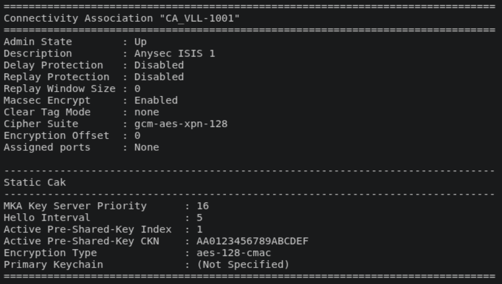
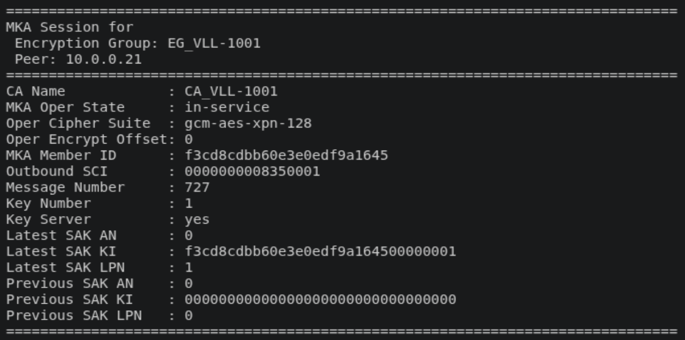
With all these configurations, our router is now ready to create an ANYsec tunnel with two services using it.
Service Encryption
For our final experiment, we will briefly analyze a new feature recently added to ANYsec: Service Encryption.
A simple way to describe Service Encryption is to say that it is a targeted way of protecting services, focusing on individual services rather than entire tunnels. It offers a higher degree of granularity in the protection and customization it provides.
While Tunnel Encryption can encrypt everything within its tunnel, Service Encryption works on a per-service basis.
To configure a service to be protected through Service Encryption, the process is similar to the previous one. We create our STP, this time without peer tunnel attributes:
/configure anysec security-termination-policies policy "STP_SERV-1002" admin-state enable
/configure anysec security-termination-policies policy "STP_SERV-1002" local-address 10.0.0.12
/configure anysec security-termination-policies policy "STP_SERV-1002" rx-must-be-encrypted false
/configure anysec security-termination-policies policy "STP_SERV-1002" protocol sr-isis
/configure anysec security-termination-policies policy "STP_SERV-1002" igp-instance-id 2
Then, we create the EG, this time using the service encryption path:
/configure anysec service-encryption encryption-group "EG_SERV-1002" admin-state enable
/configure anysec service-encryption encryption-group "EG_SERV-1002" security-termination-policy "STP_SERV-1002"
/configure anysec service-encryption encryption-group "EG_SERV-1002" encryption-label 2201
/configure anysec service-encryption encryption-group "EG_SERV-1002" ca-name "CA_SERV-1002"
/configure anysec service-encryption encryption-group "EG_SERV-1002" peer 10.0.0.22 admin-state enable
Then, we configure the MACsec CA, similarly to the others:
/configure macsec connectivity-association "CA_SERV-1002" admin-state enable
/configure macsec connectivity-association "CA_SERV-1002" description "Anysec ISIS 2"
/configure macsec connectivity-association "CA_SERV-1002" clear-tag-mode none
/configure macsec connectivity-association "CA_SERV-1002" cipher-suite gcm-aes-xpn-128
/configure macsec connectivity-association "CA_SERV-1002" anysec true
/configure macsec connectivity-association "CA_SERV-1002" static-cak active-psk 1
/configure macsec connectivity-association "CA_SERV-1002" static-cak mka-hello-interval 5
/configure macsec connectivity-association "CA_SERV-1002" static-cak pre-shared-key 1 encryption-type aes-128-cmac
/configure macsec connectivity-association "CA_SERV-1002" static-cak pre-shared-key 1 cak "0123456789ABCDEF0123456789ABCDEF"
/configure macsec connectivity-association "CA_SERV-1002" static-cak pre-shared-key 1 cak-name "BB0123456789ABCDEF"
/configure macsec connectivity-association "CA_SERV-1002" static-cak pre-shared-key 2 encryption-type aes-128-cmac
/configure macsec connectivity-association "CA_SERV-1002" static-cak pre-shared-key 2 cak "123456789ABCDEF0123456789ABCDEF0"
/configure macsec connectivity-association "CA_SERV-1002" static-cak pre-shared-key 2 cak-name "BB123456789ABCDEF0"
Finally, when configuring the service, we assign the EG to the spoke we are using for that service so that the actual encryption occurs and the traffic for this service is encrypted:
/configure service epipe "1002" admin-state enable
/configure service epipe "1002" description "SERV using ISIS 2 best IGP metric on Bottom"
/configure service epipe "1002" customer "1"
/configure service epipe "1002" service-mtu 8100
/configure service epipe "1002" spoke-sdp 2222:1002 admin-state enable
/configure service epipe "1002" spoke-sdp 2222:1002 anysec-encryption-group "EG_SERV-1002"
/configure service epipe "1002" sap 1/1/c3/1:1002 admin-state enable
This additional step is necessary compared to Tunnel Encryption. Otherwise, this service traffic would remain in cleartext throughout the network.
The command to view the STP and EG is similar, changing only from tunnel encryption to service encryption:
The same applies to the MKA session command:
As we can see in Figure 15, the output for these commands regarding Service Encryption does not change in any meaningful way, except for what would be expected from a different EG and STP.
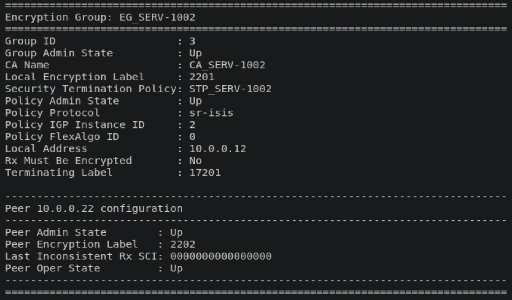
We hope that these experiments helped you understand ANYsec slightly better, both in terms of its differences and similarities to MACsec and other similar solutions and its fundamental features. We also hope that they will help you configure and understand your own ANYsec-protected networks!
We hope to see you in our next laboratory, regarding WireGuard!